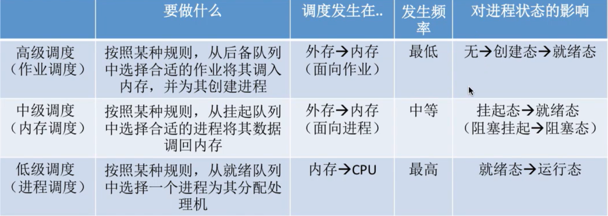

操作系统知识点复习
操作系统之进程与线程
进程
进程控制块PCB：系统为每个运行的程序配置的数据结构，用来描述进程的各种信息（代码存放位置等）。操作系统通过PCB来管理进程。
进程实体：由程序段、数据段、PCB三部分组成。其中PCB是进程存在的唯一标志。
进程定义：进程是进程实体的运行过程，是系统进行资源分配和调度的一个独立单位。进程强调“动态性”。
进程的状态：运行态Running、就绪态Ready、阻塞态Blocked。另外两种：创建态、终止态。
进程的组织方式：链接方式（队列）、索引方式（表）
进程的控制：用“原语”实现，即“原子操作”。原语在执行时不允许中断，属于操作系统内核的一部分。
进程通信：
- 共享存储：互斥的，同时只允许一个进程访问共享空间。
- 消息传递
- 直接通信
- 间接通信：先发到“信箱”
- 管道通信：在内存中开辟一个大小固定的缓冲区。
- 各个进程对管道的访问是互斥的；
- 管道是半双工的，一个管道同一时刻只能单向传输。全双工要两个管道。
线程：
- 每个进程可能包含多个线程，来提高并发度。
- 线程是程序执行的最小单位。
- 引入线程后，进程是系统资源分配的基本单位，线程是调度的基本单位。
- 进程间并发，线程间并发。同一进程的线程间并发不用切换进程环境，减小了系统开销。
线程的实现方式：
- 用户级线程：对应操作系统的用户态。
- 内核级线程：对应操作系统的核心态。
- 内核级线程才是处理机分配的单位，用户级线程先映射到内核级线程上。
- 多线程模型：多对一、一对一、多对多。
进程调度：
- 作业调度：高级调度
- 内存调度：中级调度
- 挂起状态：除PCB外，某 进程资源暂时调到外存中等待。分为就绪挂起和阻塞挂起。
- 进程调度：低级调度
 图1 三层进程调度
进程互斥与进程同步
- 进程互斥：当一个进程访问某临界资源时，另一个要访问该资源的进程必须等待。
- 系统资源的两种共享方式：互斥共享、同时共享。
- 临界资源：互斥共享，同一时间段只允许一个进程使用。
- 对临界资源的互斥访问，在逻辑上分为四部分：
do {
entry section; // 进入区：检查是否可进入临界区，若可进入则上锁
critical section; // 临界区：访问临界资源
exit section; // 退出区：解锁
remainder section; // 剩余区：其他处理
} while (true)进程互斥的原则：
- 空闲让进：临界区空闲，允许一个进程立即进入
- 忙则等待：临界区被锁，其他进程必须等待
- 有限等待：保证要访问临界区的进程不会饥饿，能在有限时间内进入
- 让权等待：若一个进程不能进入临界区，应立即释放处理机，防止忙等待
进程同步：并发的进程因直接制约而互相发送消息、进行相互合作、相互等待，使得各进程按一定的速度执行的过程。
使用信号量机制(P、V操作)实现进程互斥、进程同步：
- 用进程阻塞避免了“忙等”
- P、V操作对应 wait() 和 signal() 原语，实现系统资源的申请和释放
- 无资源可用则自我阻塞block()，用完资源后唤醒等待队列中的进程wakeup()
- 实现互斥关系时，设置互斥信号量S的初始值为1，在临界区之前执行P(S)，在临界区之后执行V(S)
- 实现同步关系时，即操作有先后，设置同步信号量S的初始值为0，要在“前操作”之后执行V(S)，在“后操作”之前执行P(S)，这样无论哪个进程先运行，都能保证同步
/* 记录型信号量的定义 */
typedef struct {
int value; //剩余资源数
struct process *L; //等待队列
} semaphore;/* 某进程要是用资源时，使用wait()原语申请 */
void wait (semaphore S) {
S.value--;
if (S.value < 0) {
block(S.L);
}
}/* 某进程使用完资源后，使用signal()原语释放资源 */
void signal(semaphore S) {
S.value++;
if (S.value <= 0) {
wakeup(S.L);
}
}生产者消费者问题：进程互斥与进程同步
- 问题描述：
- 生产者、消费者共享一个初始为空、大小为n的缓冲区
- 当缓冲区未满时，生产者可以生产产品并放入缓冲区，否则必须等待
- 当缓冲区未空时，消费者可以从缓冲区中取走产品，否则必须等待
- 缓冲区是临界资源，必须互斥访问
对于单生产者、单消费者问题：
semaphore mutex = 1; //互斥信号量，互斥访问buffer
semaphore empty = n; //同步信号量，表示buffer中的空闲位置
semaphore full = 0; //同步信号量，表示buffer中的产品数
producer() {
while (1) {
produce a product;
P(empty); //有空闲位置才会生产
P(mutex);
put the product to buffer;
V(mutex);
V(full);
}
}
consumer() {
while (1) {
P(full); //有产品才会消费
P(mutex);
take a product from buffer;
V(mutex);
V(empty);
consume the product;
}
}- P、P和P、V不可颠倒，否则会引发死锁，V、V无所谓
- 多生产者、多消费者问题类似，分析好相互之间的制约关系和对buffer的互斥关系
- 生产者吸烟者问题：单生产者、多消费者问题，改变一下代码逻辑即可
- 读者、写者问题：1个写者，n个读者；读写互斥；读者与读者不互斥；第一个开始读的负责加锁，最后一个读完的负责解锁。设置一个计数器count记录当前的读进程数。
管程
- 管程的组成：
- 局部于管程的共享数据结构说明
- 初始化共享数据的语句
- 对共享数据进行操作的函数（过程）
- 管程有一个名字
- 特征：
- 数据只能被这些过程访问
- 进程对管程的访问是互斥的
- 把同步、互斥等操作进行了封装，解决信号量机制麻烦易出错的问题
管程：
monitor ProducerConsumer
condition full, empty; //同步条件量
int count = 0; //缓冲区产品数
void insert(Item item) { //生产者把产品放入缓冲区
if (count == N) { //若缓冲区满，则生产者进程阻塞
wait(full);
}
count++;
insert_item(item);
if (count == 1) { //如果之前是空，唤醒消费者进程
signal(empty);
}
}
Item remove() { //消费者从缓冲区取走产品
if (count == 0) { //若缓冲区空，阻塞消费者进程
wait(empty);
}
count--;
if (count == N - 1) { //若之前缓冲区满，唤醒生产者进程
signal(full);
}
return remove_item();
}
end monitor;生产者进程：
producer() {
while (1) {
item = produce a product;
ProducerConsumer.insert(item);
}
}消费者进程：
consumer() {
while (1) {
item = ProducerConsumer.remove();
consume item;
}
}- java中的 synchronized 关键字能实现类似于管程的机制
死锁
死锁：在并发环境下，各进程因竞争资源而造成相互循环等待，进而导致各进程都阻塞的现象。
饥饿：进程长期得不到资源，无法推进。
- 银行家算法：避免死锁
- 检查此次申请是否超过了之前声明的最大需求数；
- 检查此时系统剩余可用资源能否满足这次申请；
- 试着分配，更改各数据结构；
- 用安全性算法检查此次分配会不会导致系统进入“不安全状态”，如果会则阻塞该进程。
- 安全性算法：
- 检查当前剩余可用资源能否满足某个进程的最大需求；
- 如果能，就把该进程加入安全序列；等进程结束，把该进程持有的资源全部回收。
- 不断重复这个过程，看最终能否把所有进程都加入安全序列。
操作系统之进程问题集锦
进程和线程以及它们的区别？
- 进程是对运行时程序的封装，是系统进行资源调度和分配的基本单位，实现操作系统的并发。
- 线程是进程的子任务，是CPU调度的基本单位，用于保证程序的实时性，实现进程内部的并发。
- 一个程序至少一个进程，一个进程至少一个线程，线程依赖于进程存在。
- 进程拥有独立的内存单元，同一个进程的不同线程间共享该进程的内存单元。
进程间通信的几种方式？
线程同步的方式？
死锁？
操作系统之内存管理
内存分为系统区和用户区。
内存管理：
- 内存空间的分配与回收
- 虚拟内存技术从逻辑上对内存空间进行扩充
- 实现地址转换：逻辑地址与物理地址的转换
- 内存保护，保证各进程之间互不干扰
交换技术：当内存空间紧张时，系统将内存中某些进程暂时换出外存，并把外存中某些已具备条件的进程换入内存。
- 进程在内存与磁盘间动态调度。
- 被调出内存的进程PCB会保留在内存中，用于记录外存位置等信息。
- 被换出的进程数据被存放在磁盘的“对换区”，储存空间连续分配，I/O速度比文件区快。
- 被调出内存的进程处于挂起态suspend。下面是进程的七状态模型：
- 内存的动态分区分配：不预先划分内存分区，而是在进程装入内存时，根据进程大小动态地建立分区，分区大小刚好满足进程需要。动态分区分配不会产生内部碎片，但有外部碎片。
- 内部碎片：分配给某进程的内存区域太大，有没被利用的部分。
- 外部碎片：内存中的空闲分区由于空间太小而难以利用。
- 外部碎片可以通过“紧凑技术”Compaction来进行合并，紧凑技术会把现有的进程的内存空间首尾相接，时间代价较高。
分页存储
- 基本分页存储管理：内存分为多个小空间的页框（内存块），把进程按页框大小分页，各个页面离散地分配到各个内存块中，这样有利于减小碎片。使用页表来保存页面地址。
- 地址变换机构实现目标内存单元的查找。
- 在地址变换机构的基础上，加入“快表”，实质是一种缓存，加速地址变换。
- 多级页表，避免单级页表占用内存中很多个连续的页框的问题。多级页表对原始页表进行分块，内存中只放入进程最近需要的页表。
- 请求分页存储管理：不一次把程序所有资源调入内存，需要使用时由操作系统调入内存，若内存不够则需要使用页面置换算法把当前不用的信息调出到外存。
页面置换算法
- 最佳置换算法 OPT：每次选择淘汰的页面是以后永不使用或最长时间内不会被使用的。无法实现。
- 先进先出置换算法 FIFO：每次淘汰的页面是最早进入内存的页面。使用队列实现。
- 最近最久未使用置换算法 LRU：每次淘汰的页面是最近最久未使用的页面。在页表项中添加访问字段记录未访问的时间。
- 时钟置换算法 CLOCK：每个页面设置一个访问位，把所有页面连成循环队列。当某页被访问时，访问位=1。当要淘汰一个页面时，检查循环队列的访问位，找第一个访问位=0的页换出；若遍历时该位是1，则置0。若第一遍遍历没找到=0的，再找第二遍，肯定能找到=0的。
- 改进型的时钟置换算法：在CLOCK算法的基础上，还考虑页面有没有被修改过，避免被修改过的页面被换出时的I/O操作。
页面分配策略
- 驻留集：请求分页存储管理中给进程分配的内存块的集合。
- 策略：
- 固定分配、局部置换：程序运行前分配固定数量内存块，内存缺页时在自己进程内部换页。
- 可变分配、全局置换：缺页时分配新物理块，可能来自空闲物理块或换出其他进程页面。
- 可变分配、局部置换：应对频繁缺页的进程会多分配内存块，反之回收内存块。
- 颠簸（抖动）：页面频繁换入换出。主要原因是分给该进程的内存块不够。
分段存储
- 定义：进程的地址空间，按照逻辑功能被划分为若干个段，每个段有自己的段名（方便用户编程），并且每个段从0开始编址
- 内存分配规则：以段为单位进行内存分配，每个段在内存中占连续的地址空间，但各段之间可以不相邻。
- 分段系统的逻辑地址：一个地址（假设32位，0~31）由高M位表示段号（比如16~31），低N位表示段内偏移（比如0~15）。段号的多少决定分段个数，段内偏移决定每个段长。
- 分段存储的寻址：使用“段映射表”，简称段表。每个段对应段表中的一个项，记录该段在内存中的起始地址（基址）和段长。寻址过程：
- 拿到一个段的逻辑地址，在段表寄存器中查询该段号是否越界（段号与段表长度比较）。
- 利用段表寄存器找到段表基址，再利用段号找到该段的基址。
- 利用段表项判断段内偏移是否超过该段的长度，然后再计算物理地址。
- 分段、分页管理对比：
- 页是信息的物理单位。分页的目的是实现离散分配，提高内存的利用率。是系统行为，对用户不可见。
- 段是信息的逻辑单位。分段的目的是满足用户需求，一个段通常包含一组逻辑模块的信息。分段对用户可见，用户编程需要显式地给出段名。
- 页的大小固定；段的长度不固定，取决于用户编写的程序。
- 分段按逻辑功能来分，更容易实现信息（指非临界资源）的共享和保护。
- 段页式管理：逻辑地址结构是二维的：段号、页号、页内地址。
- 分段对用户可见。
- 分页由操作系统自己完成，对用户不可见。
- 寻址：一个进程被分为N个段，先查段表，确定该段的页表位置，再查页表，确定存放的内存块号。
虚拟内存
在程序装入内存时，将即将用到的部分先转入内存，暂时不用的留在外存；当所访问的信息不在内存时，操作系统负责将所需信息调入内存；当内存空间不够时，操作系统将内存中暂时不用的信息调出到外存。
操作系统之文件管理
文件的逻辑结构
- 文件按逻辑结构可分为：
- 无结构文件：由二进制流或字符流组成，无明显逻辑结构。如txt文件。
- 有结构文件：由记录组成，分为定长记录、可变长记录。
- 顺序文件：若为定长记录，则可以快速检索和实现随机存取。
- 索引文件：利用索引表。可以支持随机存取和快速检索。
- 索引顺序文件
- 文件目录结构：
- 文件分配方式：
- 磁盘在逻辑上分为文件卷，每个文件卷又课分为目录区、文件区
- 目录区：包含文件目录、空闲表、位示图、超级块等用于文件管理的数据
- 文件的存储空间管理方法：
- 空闲表法：空闲表记录连续空闲区的起始盘块号和盘块数，回收时把相邻的空闲区合并
- 空闲链表法：采用链表连接各个空闲区间
- 空闲盘块链：以盘块为单位连接
- 空闲盘区链：把相邻盘块看成盘区，把盘区相连
- 位示图法：用1个bit指示每个盘块是否空闲
- 成组链接法：UNIX采用的方式，适用于大型文件系统。
- 设置一个“超级块”，系统启动后读入内存中，并保证其与外存中的“超级块”数据一致。
- 每一组空闲区间链接起来，超级块中存放下一组空闲区间的盘块数，和该组盘块的盘块号。
- 文件的基本操作
- 创建
- 删除
- 打开：打开文件表，每个进程有自己的打开文件表，系统有总的打开文件表
- 关闭：删除进程打开文件表中的表项，然后系统的打开文件表中打开计数器减1
- 读
- 写
- 文件共享
- 硬链接：某用户删除文件时，只删除该用户的目录项，链接计数器-1，当删到链接计数器为0才真正删除该文件
- 软链接：用link型文件记录该共享文件的存放路径，访问该文件时按路径查询多级目录，访问速度比硬链接慢，相当于Windows操作系统中的快捷方式
- 文件保护
- 口令保护
- 加密保护
- 访问控制：使用访问控制表ACL记录各个用户对文件的权限

- 57
issues
- 不同操作系统的CPU竞争策略与
Thread.Sleep(0)。
- Unix系统使用时间片算法：所有进程组成进程队列，操作系统按照顺序给进程分配CPU使用时间；如果时间片结束时进程还在运行，则CPU被剥夺并分配给另一个进程，然后该进程被移到队尾。
- Windows系统使用抢占式算法：操作系统根据各进程的优先级、节时间来确定程序运行顺序；在进程执行完毕或者主动挂起后，操作系统会重新计算总优先级。
Thread.Sleep(0)的作用就是触发操作系统立即进行一次CPU竞争。